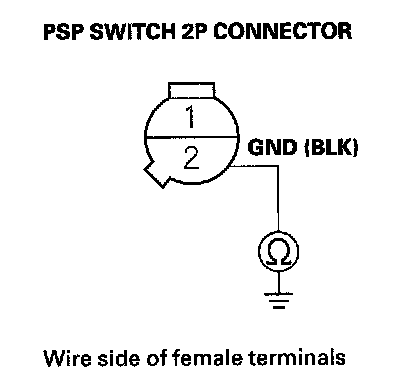

PSP Switch Signal Circuit Troubleshooting
PSP Switch Signal Circuit Troubleshooting1. Start the engine, and let it idle.
2. Align the steering wheel straight ahead.
3. Check the PSP SWITCH in the DATA LIST with the HDS.
Does it indicate ON?
YES - Go to step 4.
NO - Go to step 14.
4. Turn the steering wheel to the full lock position.
5. Check the PSP SWITCH in the DATA LIST with the HDS.
Does it change to OFF?
YES - The PSP switch signal circuit is OK.
NO - Go to step 6.
6. Turn the ignition switch OFF.
7. Disconnect the PSP switch 2P connector.
8. Start the engine.
9. Check the PSP SWITCH in the DATA LIST with the HDS.
Does it change to OFF?
YES - Replace the PSP switch.
NO - Go to step 10.
10. Turn the ignition switch OFF.
11. Jump the SCS line with the HDS.
12. Disconnect PCM connector A (49P).
13. Check for continuity between PSP switch 2P connector terminal No. 1 and body ground.
Is there continuity?
YES - Repair short in the wire between the PCM (A38) and the PSP switch.
NO - Update the PCM if it does not have the latest software, or substitute a known-good PCM, then recheck. If the symptom/indication goes away with a known-good PCM, replace the original PCM
14. Turn the ignition switch OFF.
15. Disconnect the PSP switch 2P connector.

16. Connect PSP switch 2P connector terminals No. 1 and No. 2 with a jumper wire, then start the engine.
17. Check the PSP SWITCH in the DATA LIST with the HDS.
Does it change to ON?
YES - Replace the PSP switch.
NO - Go to step 18.
18. Turn the ignition switch OFF.
19. Remove the jumper wire from the PSP switch 2P connector.
20. Jump the SCS line with the HDS.
21. Disconnect PCM connector A (49P).
22. Check for continuity between PCM connector terminal A38 and PSP switch 2P connector terminal No. 1.
Is there continuity?
YES - Go to step 23.
NO - Repair open in the wire between the PSP switch and the PCM (A38).

23. Check for continuity between PSP switch 2P connector terminal No. 2 and body ground.
Is there continuity?
YES - Update the PCM if it does not have the latest software, or substitute a known-good PCM, then recheck. If the symptom/indication goes away with a known-good PCM, replace the original PCM.
NO - Repair open in the wire between the PSP switch and G202.